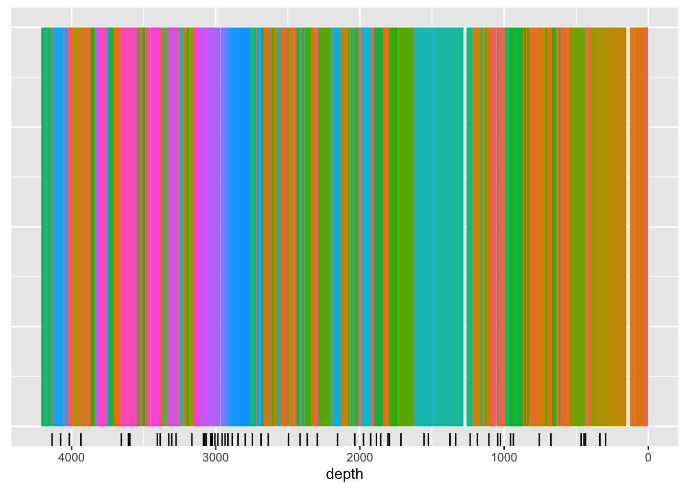

7.2 Selecting Samples
Unless you plan on sub-sampling the entire core, perhaps contiguously, you will need to decide where best to take your samples for best model coverage. If you are only interested in a single element, this is trivial - simply ensure your sampling strategy encompasses a wide range of samples. However, where you are attempting to calibrate for many elements, developing an optimal sampling strategy manually can be difficult.
The function below illustrates the use of cluster analysis in optimising the sampling regime. Because it is unrealistic to plan on accurately sub-sampling at the high-resolution of the data (in this case, 1 mm), we use itrax_reduce() to re sample the data to a lower resolution, in this case, 10 mm.
The following itrax_section() performs an unconstrained cluster analysis, and also reports the central sample in each cluster. This could be considered the most representative of each cluster, and thus the suitable location for sampling. In the graph below, the black ticks created by geom_rug() are the suggested sampling locations.
CD166_19_xrf %>%
filter(qc == TRUE) %>%
itrax_reduce(by = 10) %>%
mutate(uid = 1:length(uid)) %>% # we have to spoof uid here
drop_na("depth") %>%
itrax_section(divisions = 60,
elementsonly = c("Al", "Si", "K" , "Ca", "Ti",
"V" , "Cr", "Mn", "Fe", "Ni",
"Cu", "Zn","Sr" , "Y" , "Zr",
"Ba")
) %>%
ggplot(mapping = aes(x = depth, y = 1, fill = group)) +
geom_tile(width = 10) +
scale_x_reverse() +
geom_rug(sides = "b",
data = . %>% filter(calib_sample == TRUE)) +
theme(axis.title.y = element_blank(),
axis.text.y = element_blank(),
axis.ticks.y = element_blank(),
legend.position = "none") 
To return a core sampling plan, some conversions must be performed:
CD166_19_xrf %>%
filter(qc == TRUE) %>%
itrax_reduce(breaks_lower = seq(from = 0, to = 4209-10, by = 10),
breaks_upper = seq(from = 0+10, to = 4209, by = 10)) %>%
# this needs a method for simply adding all the character vectors from each chunk together into a vector...
mutate(uid = 1:length(uid)) %>%
mutate(breaks_lower = seq(from = 0, to = 4209-10, by = 10),
breaks_upper = seq(from = 0+10, to = 4209, by = 10)) %>% # we have to spoof uid here
drop_na("depth") %>%
itrax_section(divisions = 60,
elementsonly = c("Al", "Si", "K" , "Ca", "Ti",
"V" , "Cr", "Mn", "Fe", "Ni",
"Cu", "Zn","Sr" , "Y" , "Zr",
"Ba")
) %>%
filter(calib_sample == TRUE) %>%
select(group, depth, breaks_lower, breaks_upper, everything()) %>%
arrange(depth) %>%
select(breaks_lower, breaks_upper) %>%
mutate(core = if_else(breaks_upper >= min(CD166_19_S1$xrf$depth) & breaks_upper <= max(CD166_19_S1$xrf$depth), "c1", "")) %>%
mutate(core = if_else(breaks_upper >= min(CD166_19_S2$xrf$depth) & breaks_upper <= max(CD166_19_S2$xrf$depth), "c2", core)) %>%
mutate(core = if_else(breaks_upper >= min(CD166_19_S3$xrf$depth) & breaks_upper <= max(CD166_19_S3$xrf$depth), "c3", core)) %>%
mutate(core_position_lower = ifelse(core == "c1", breaks_lower-min(CD166_19_S1$xrf$depth), NA)) %>%
mutate(core_position_lower = ifelse(core == "c2", breaks_lower-min(CD166_19_S2$xrf$depth), core_position_lower)) %>%
mutate(core_position_lower = ifelse(core == "c3", breaks_lower-min(CD166_19_S3$xrf$depth), core_position_lower)) %>%
mutate(core_position_upper = ifelse(core == "c1", breaks_upper-min(CD166_19_S1$xrf$depth), NA)) %>%
mutate(core_position_upper = ifelse(core == "c2", breaks_upper-min(CD166_19_S2$xrf$depth), core_position_upper)) %>%
mutate(core_position_upper = ifelse(core == "c3", breaks_upper-min(CD166_19_S3$xrf$depth), core_position_upper)) %>%
select(core, core_position_lower, core_position_upper)## # A tibble: 60 × 3
## core core_position_lower core_position_upper
## <chr> <dbl> <dbl>
## 1 c1 80 90
## 2 c1 330 340
## 3 c1 430 440
## 4 c1 440 450
## 5 c1 460 470
## 6 c1 670 680
## 7 c1 770 780
## 8 c1 840 850
## 9 c1 930 940
## 10 c1 1020 1030
## # ℹ 50 more rows